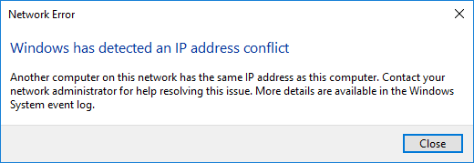

Note: This page has moved to https://eblocker.org/en/docs/windows-10-ip-address-conflict-message
Deutsch | English
In some rare cases, Windows 10 may report an "IP address conflict" after the operating system is started.

Normally it is usually enough to close this message. After a few seconds Windows 10 gets its IP address assigned afterwards.